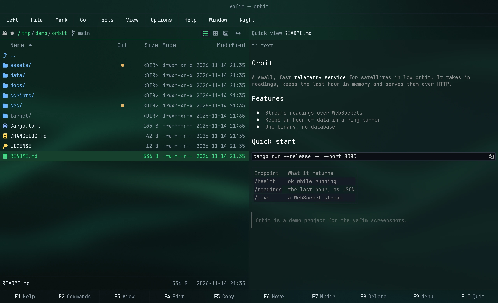
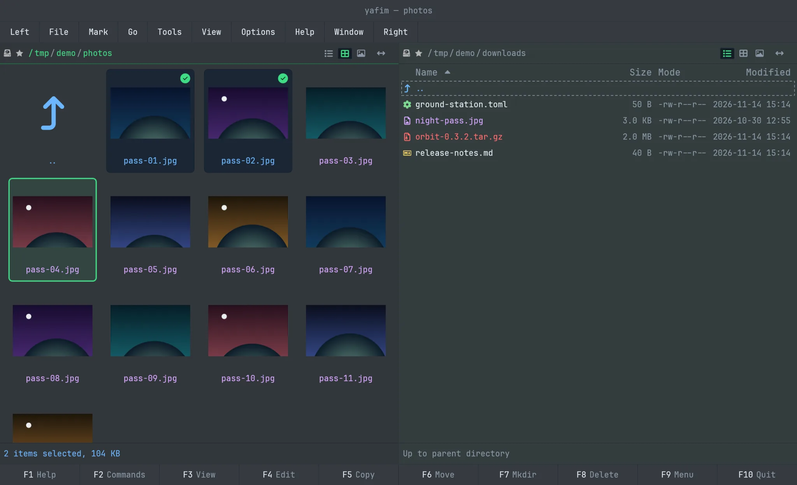
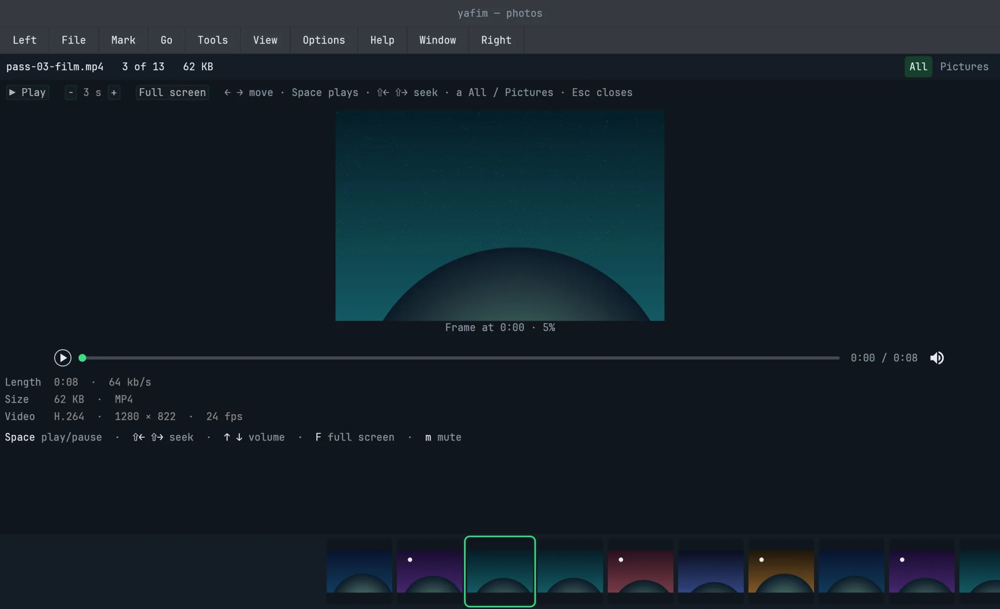
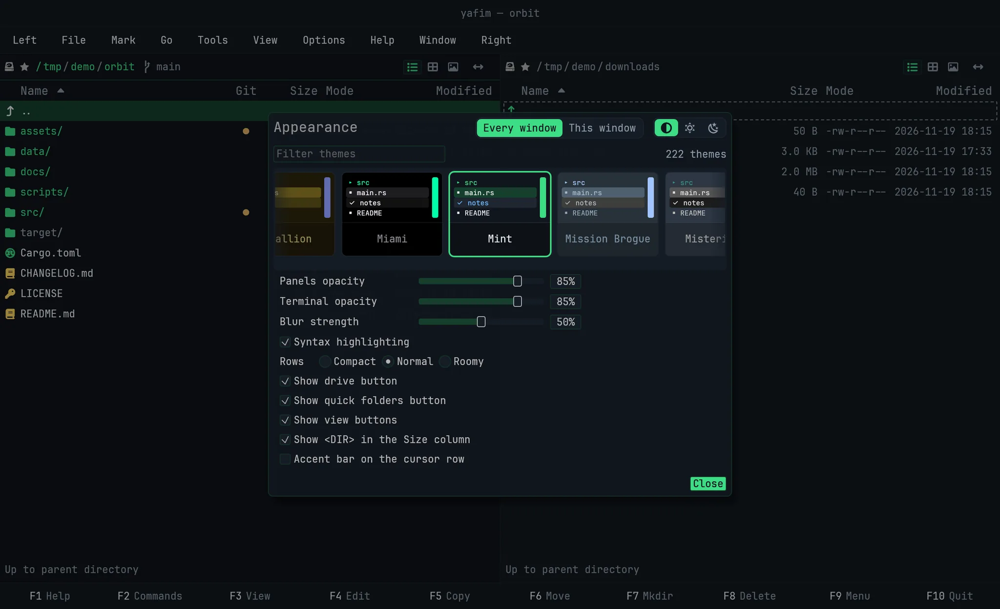
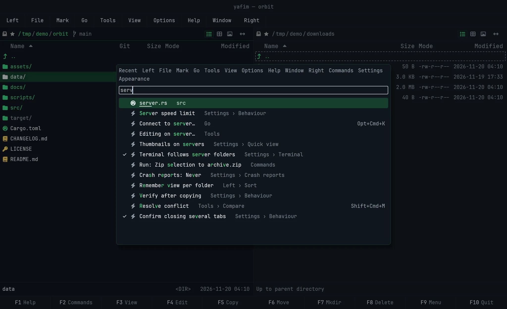
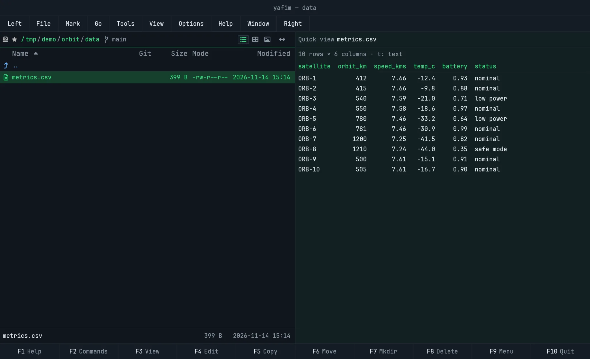
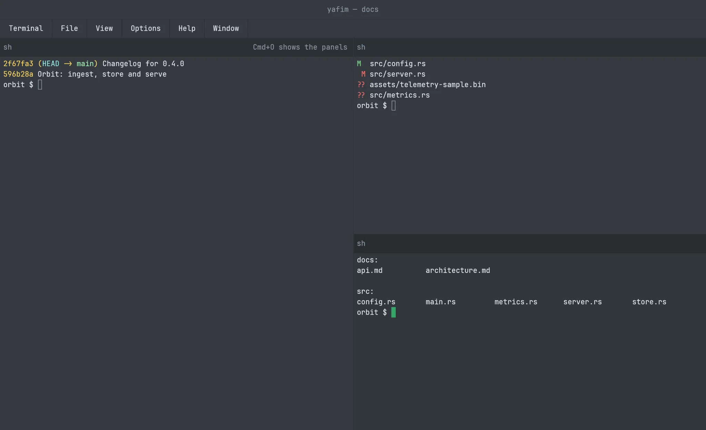
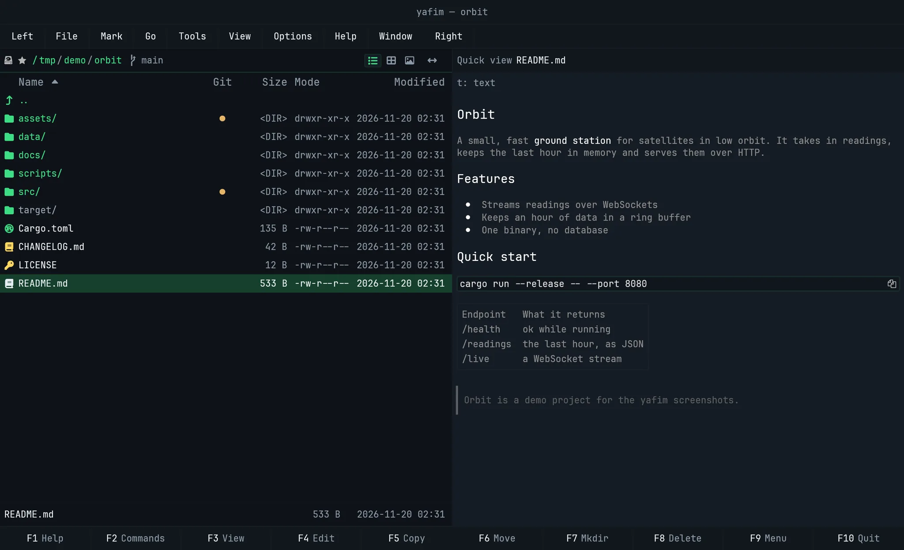

yet another file manager — rust · egui
Two panels.
A real terminal.
Rust-fast.
A keyboard-first, dual-panel file manager in the spirit of Midnight Commander, written in Rust. Your shell is one key away, in splits; folders open as lists or thumbnails; servers and cloud drives sit in a panel like any disk. It previews almost anything, knows your git status, can be see-through — and nothing it does to your files can't be undone or isn't asked first.
macOS Linux Windows


Panels opacity at 60%, blurred behind — the desktop shows through, the text stays solid.
// features
The newest. The ones that change your day.
The biggest additions since the first release, newest and most significant first; the rest live in the CHANGELOG. Every picture is the real app, rendered by its test suite.


Thumbnails and a wide panel
A panel shows its folder as a list or as cards with pictures — photos, and on a Mac videos, PDFs and documents too — while the other panel stays a list to file them into. Every panel key works on the cards. A wide panel takes the whole window when you want more on screen.
- Five card sizes, from 48 to 176 points; 64 at first, as Finder's icons
- Pictures made in the background, nearest the cursor first; the gallery's strip shares them
- Buttons at the end of every path bar switch list, thumbnails, gallery and wide
⌘⌥2 thumbnails ⌘⌥1 list ⌘G gallery ⌘⌥E wide


A gallery of any folder
The gallery opens anywhere and shows every item large, one at a time: photos zoomable as before, and everything else as the quick view draws it — Markdown rendered, code coloured, PDF pages, tables, data trees, video and audio that play, a folder's contents. Walk through a folder of documents the way you walk through photos.
- All or Pictures in the header; on a picture it starts with pictures only
- Enter goes into a folder and ⌘↑ comes back out, without leaving the gallery
- The slideshow plays pictures and videos, each video to its end; full screen, a video's controls hide while it plays and the arrows seek
- Del sends an item to the Trash, ⌘Z brings it back
⌘G gallery a All / Pictures F full screen P slideshow


A see-through window, frosted by the system
Turn the panels, the viewer and the editor see-through, and the terminal on its own setting, from 20% to solid. What is behind the window shows through, blurred; text, the cursor bar and dialogs stay crisp. It all lives in one Appearance dialog, and yafim starts this way: dark Mint, 85%, blurred at 50%.
- Options › Appearance: theme cards, System / Light / Dark, Panels opacity and Terminal opacity
- Blur strength: a slider, from none to strong — the window server's blur on macOS, Acrylic on Windows
- The title, menu and function-key bars follow, so the window reads as one sheet
Options › Appearance… ←→ by 5%


F9 is the command palette
Every command in one searchable list, in tabs that mirror the menus — plus Recent and Settings. Type a few letters to run anything, or walk the tabs with ← → to discover what yafim can do.
- Recent commands first, remembered between launches
- Settings rows right in the results
- The key for each command shown beside it
F9 palette ⌘⇧O too ←→ tabs


A quick view that reads almost anything
Ctrl+Q turns the other panel into a live preview of the cursor item, and it now understands far more than text.
- CSV and TSV as tables; JSON, YAML and TOML as text or a folding tree (t)
- Markdown rendered; a folder's contents and size
- Photo details with the place on a map, audio tags and covers, video frames
Ctrl+Q quick view t table / tree / text


A real terminal, in splits
⌘O swaps the panels for your shell, which keeps running while hidden. Split it right and down, follow the panel's folder, and ⌘-click any path or URL the tools print.
- Splits with their own shells; resize with the dividers; right-click a pane for its menu
- Quick folders (⌘S) and Switch drive (⌘⇧S) take the shell there — a server folder opens ssh
- Paths like src/main.rs:42 open in the editor at that line
- Kept with windows and saved layouts
⌘O terminal ⌘D split right ⌘⇧D down — in the terminal


Git-aware panels and tabs
Turn on the Git column and every row shows whether it is modified, staged, new or ignored, with the branch and how far it is from upstream in the path bar. Stage, commit, pull and push without leaving the panels. Tabs keep several folders in each panel.
- Tools › Git: stage (⌘⌥A), commit with recent messages (⌘⌥C), pull, push, fetch; remotes and worktrees
- Resolve merge conflicts three-way: Local, Result, Remote (⌘⇧M)
- Tabs per panel, locked tabs, middle-click to open
- A folder tree (⌘⇧K) and Go to folder: a few letters find the folders you use (⌘J)
⌘T new tab ⌘J go to folder ⌘⇧M resolve
And everything the classic workflow needs.
Every feature is written down first, with what it must do, and built on a tested core that knows nothing of the window. Beyond the highlights above, here is what that means in daily use.
Dual-panel browsing
Two independent panels with resizable split, type-ahead jump, marking with running count and size, sort and hidden-file toggle. Sync browsing walks two similar trees together. 100k-entry directories stay smooth — only visible rows are laid out.
↑↓→TabInsert mark ⌘⌥S sync browsing
File ops that never lose data
F5 copy, F6 move/rename, F7 mkdir, F8 to the OS trash — permanent delete is a separate, always-confirmed action. Conflicts ask (overwrite / skip / rename / all). Long ops run with a cancellable progress dialog.
F5F6F7F8⇧F8 permanent
Del is quick trash
One key, zero ceremony: Del moves the cursor or marked items straight to the OS trash — no confirmation dialog, because it is always recoverable. The status line tells you what went where. Permanent deletion still demands its own explicit confirmation, every time.
Del trash now F8 trash (ask) ⇧F8 permanent (ask)
Undo
Moves, renames and moves to the Trash go back, through the last twenty — the safety net that makes fast keyboard work relaxed.
⌘Z undo
Folder sizes on demand
One key puts real sizes in place of <DIR> for the marked folders, or every folder in the panel. Counted in the background, growing as you watch; sort by size and the marked total use them.
⌥Space count ⌥⇧Space all folders
Operations side by side
Copies and moves can run in the background while you keep working, several at once, with a live indicator on the function-key bar. Pause them, reorder the waiting ones, and resume a copy that broke off — only the rest is copied. The operations log keeps what ran, what failed and why.
progress › Background ⌘⇧L log
Instant copies on APFS
On a Mac, a copy within the same APFS disk is a clone: done at once whatever the size, and no extra space until one of the two changes. Everything else keeps the cancellable copy with progress.
F5 same disk: instant
Drag and drop, both ways
Drag between the panels or onto a folder row; drop files in from Finder; drag them out to Finder, Mail or a browser. Same disk moves and another disk copies, as in Finder (⌥ copies, ⌘ moves). Inside yafim the usual dialog confirms first.
drag copy / move ⌥ copy ⌘ move
Permissions and links
A Get Info–style dialog: read / write / execute for owner, group and others, octal, owner and group — across many files at once, changing only what you touch. Symlinks into the other panel, relative by default, never overwriting.
⌘I permissions ⌘L symlink
Eject a drive properly
⏏ in Switch drive, or ⌘E, ejects USB sticks, cards, disk images and network shares the system's way — flush and unmount, not just leave. Panels and tabs on the drive move to your home folder first; a terminal or copy still using it keeps it, and says why.
⌘⇧S switch drive ⌘E eject
Nine quick folders
Save your usual places to numbered slots and jump to any of them with one chord — no dialog, no dropdown. The slot list reorders, renames and tidies with the keys you already know.
Ctrl+1…Ctrl+9 jump Ctrl+⇧1 save ⌘S list
Go to file, type to filter
A fuzzy finder over everything below the panel's folder (thv finds theme_view.rs), Go to folder with completion, and letters that filter the panel as you type.
⌘P go to file ⌘⇧G go to folder
Folder history
Each panel remembers where it has been: back and forward like a browser (the mouse buttons too), and a filterable list of recent folders that survives a restart.
⌘[ back ⌘] forward ⌘Y list
Views per folder, layouts saved
Each folder remembers its sort and columns. Windows come back where they were, terminal included, and named layouts restore a whole setup in one go.
Window menu
Several windows, or tabs of one
Open another yafim window in the same folders and work in each on its own — or merge them into tabs of one window, each still running everything it ran, all in one yafim with one Dock icon. ⌘Q quits them all, asking first if anything is still running — or not at all, if you prefer.
⌘N new ⌘` switch Window › Merge all windows
Instant viewer, any size
F3 opens the first screen of a multi-gigabyte file in under 100 ms — only the visible part is read, off the UI thread. Text or hex, forward and backward search, go to line or byte offset.
F3 view F4 hex F7 search
Pictures and PDFs in the viewer
F3 on a photo, an SVG or a PDF shows it across the window, fitted. Zoom with + and − or ⌘-scroll, drag to move around, turn PDF pages, and Space / Backspace step to the next or previous picture in the folder. H shows the bytes.
F3 view +− zoom Space next
Quick Look, Mac-native
Space opens the real macOS Quick Look panel — the same one as in Finder — floating in front of yafim while the keyboard stays with the app. Arrow keys move the cursor and the preview switches in place, item after item, without closing. Escape or Space again puts it away.
Space preview ↑↓←→ walk the folder
Archives as folders
Enter on a zip, a tarball (gz, bz2, xz, zst), 7z, RAR, ISO or a package and browse it like any folder: view files, find inside, F5 to copy out — even on a server. Compress to zip, tar.gz or 7z with an optional password; extract anywhere.
Enter go in ⌘↓ open with its app
Right-click when you want it
A context menu for the file, the marked items or the folder itself, every entry showing its key so the mouse teaches you the keyboard. Copy path, reveal in Finder, open a terminal there.
right-click ⇧F10 at the cursor
Built-in text editor
F4 edits text files up to 20 MB in place: selection, clipboard, undo/redo, find and replace, line numbers. Saves are atomic — no half-written files, and it warns if the file changed under you. Markdown opens with its rendered preview beside it, following every keystroke and scrolling with you.
F4 edit ⌘U swap preview ⌘⇧4 your $EDITOR
Multi-rename
Rename many files at once with masks for name, extension, counter and dates, search and replace (regex too) and case changes. A live preview flags clashes before anything moves, and Undo puts every name back.
Ctrl+M rename the marked items
Compress and extract
Pack the marked items into zip or tar (gz, bz2, xz, zst) with progress and Cancel — Fast zip by default — and extract any of them. Zips can be password-protected (AES), changed in place, and opened right on a server.
⌥F5 / ⌘⇧P pack ⌘⇧E extract
New files from templates
Make a file where the panel is: empty, or a copy of one of your templates, shown as cards with the ones you use most first. Keep templates in yafim's own folder or any folder you choose; on Linux the desktop's ~/Templates just works.
⇧F4 new file ⌘Enter and edit it
Tags, dates and attributes
Coloured tags after a file's name — Finder's own on a Mac, Dolphin's on Linux — set on the marked items, marked by, and searched for. Change modified and created dates, and see or remove extended attributes, the quarantine flag among them.
⌘⌥T tags ⌘I dates and attributes
Find by name and content
Search a whole tree by wildcard or regex, optionally by text inside the files — a regex too, in the encoding you pick — and narrow by size, date and kind. Results stream in while you work, one bad folder doesn't stop the run, and results can be panelized so F5/F6/F8 act on them all.
⌘F find ⇧F7 find ⌘P panelize in results
Replace in files
Find text or a regex across a folder tree and see every hit, in colour, with the old text struck through and the new beside it. Untick what to leave, replace as one safe operation, and undo it later if you change your mind.
⌘⌥F replace in files
Compare folders
Each panel marks what the other side lacks or has an older version of — ready for F5 to sync. Quick by size and time, Size only, or Thorough: same-size files are read and compared in the background, with Cancel.
⇧F2 / ⌘⇧C compare F5 sync
Synchronize and compare files
Sync two folders, subfolders too, both ways or as a mirror: every change is listed and adjustable first, then runs as one operation. Compare two files side by side, step through the differences, copy them across and save.
⌘⇧B sync ⌥F3 compare files
Checksums and verify after copy
SHA-256, SHA-1, MD5 and BLAKE3 for the marked files: copy them, save a .sha256 file, or verify one. Turn on Verify after copying and every copy is read back and compared before it counts as done.
Tools › Checksum…
Servers and cloud drives
One panel on a server, the other on your machine, and everything works across: view, edit, copy and move both ways, permissions, find, archives. yafim runs your own ssh, so ~/.ssh/config, keys, the agent and ProxyJump just work. FTP and FTPS servers, network shares, WebDAV, S3 buckets and every cloud drive rclone knows — Google Drive, OneDrive, Dropbox and more — open the same way, with share links one click away. Save a server with its password in the system's keychain, and edit a server file in your own editor — each save goes back up.
⌘K connect ⌥⇧F4 edit in your editor
Your own keys
Give any command in the panels, the viewer or the editor the keys you like: press them in a VS Code-style box, see conflicts at once, reset anytime. Saved to a plain keys.toml you can edit by hand or keep in your dotfiles.
Options › Key bindings…
Updates in one step
Once a day — if you allow it — yafim checks for a newer release and shows Update to … in the menu bar, never a dialog over your work. Read the notes, then Install and restart: the new version is downloaded, checked against the release's signed list of files before anything is replaced, and started with your windows as they were. Or let it go in the next time you quit.
Help › Check for updates… · Settings › Updates
Crash reports you see first
If yafim ever crashes, it writes a report: the version, your system, what went wrong and where in yafim's code — with no file, folder, user or server names in it. The next start shows you the whole report and asks before anything is sent; Always send and Never are a setting away. Where a filter blocks the reporting service, save the report or copy it and pass it on yourself.
Settings › Crash reports: Ask · Always send · Never
// the interface
Learnable in an afternoon, invisible after a week.
F1 opens a complete, always-current key reference inside the app — but the whole workflow fits on one screen.
- 01Keyboard first, mouse friendly.Every action has a key and a discoverable mouse path. Nothing is hidden behind a menu the keyboard can't reach.
- 02Never lose user data.Trash by default, confirmation for permanent delete, conflicts always ask. Copy verifies before the source is removed.
- 03The UI never blocks.Filesystem work runs off the UI thread with live progress and a cancel button. The cursor never freezes, even on slow disks.
- 04Cross-platform parity.macOS, Linux and Windows are first-class, each with idiomatic bindings — ⌘-keys on the Mac, F-keys everywhere else.
- 05Simple over clever.A small Rust core with no UI dependency, covered by tests — and no
unsafeoutside one documented native crate.
// the name
Yet Another File Manager — ya-FIM.
yafim says what it is with a wink. Two-panel file managers have a long line — Norton Commander, Midnight Commander, Far, Total Commander, Double Commander — and Unix has a habit of naming its tools “yet another” (yacc, YAML). yafim doesn't pretend to be the first. It takes their keyboard-first ideas — F-keys, two panels, the other side as the target — and gives them a modern home: a native window, a real terminal, thumbnails, servers and cloud drives, written in Rust.
// get it
Your files are already there.
Just change how you reach them.
Rust, nothing sent without your explicit consent, no installer — the macOS DMG is signed ad hoc, so the first launch wants right-click › Open; the Windows zip asks SmartScreen once (More info › Run anyway).